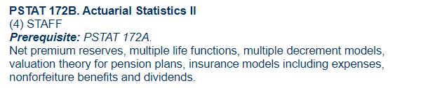

Exam FAM
This exam is part of the SOA pathway to ASA. Currently, it is administered in two parts FAM-L and FAM-S but starting in 2024 both parts will be merged into one big exam.
UCSB Course(s)
PSTAT 183 covers:
PSTAT 172A covers:

PSTAT 172B covers:
PSTAT 170 covers:
Reusable older resources
You can use the Saab Interactive problem bank. Choose exam MFE to cover Topic 6 (Options pricing fundamentals). Choose exam MLC to cover long-term actuarial topics. Choose exam C to cover short-term topics.
Older SOA exams can be useful and the correspondence is as explained above.
SOA SYllabus
The SOA syllabus lists all the textbooks and chapters you have to study to ace this exam.